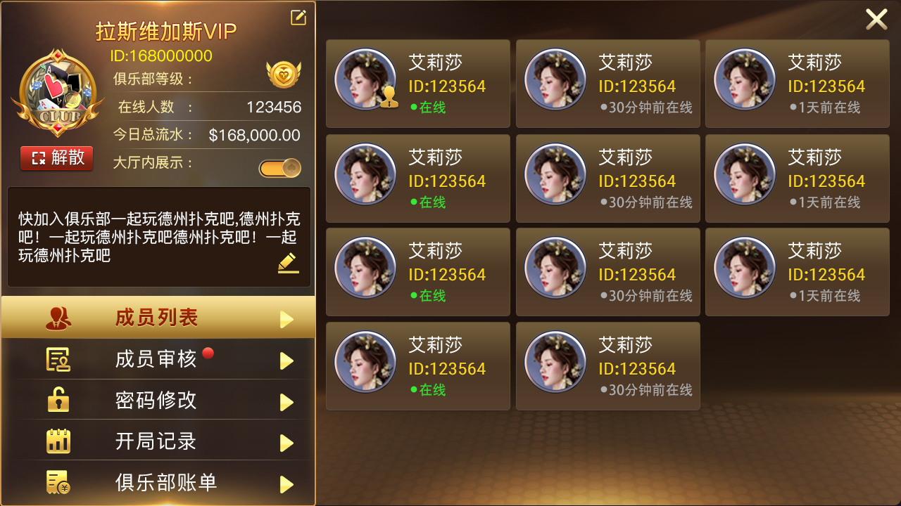
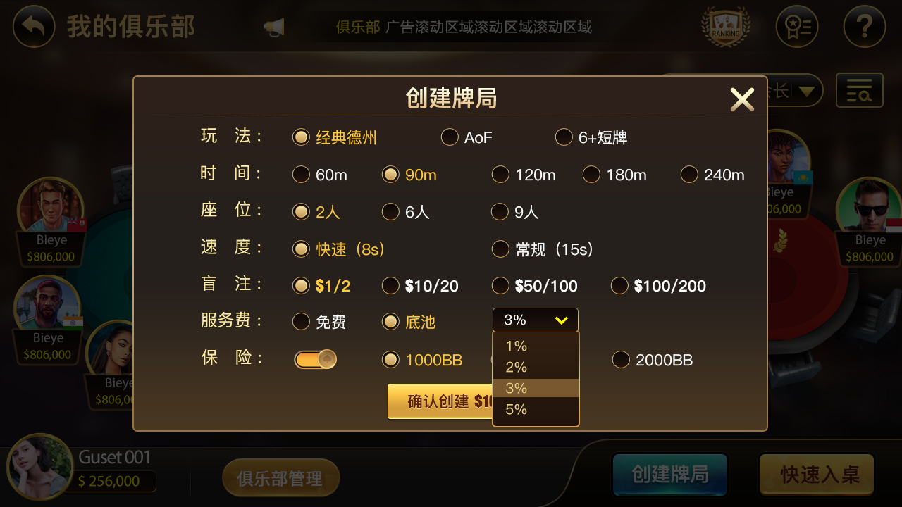

Texas Hold'em Desktop / 德州扑克桌面游戏
Texas Hold'em Desktop provides a cross-platform desktop poker client foundation with offline practice, AI opponents, tournaments, club rooms, hand history, statistics, themes and multilingual extensions.
本项目适合德州扑克桌面游戏源码、离线德州扑克练习软件、德州 AI 对手训练、德州扑克赛事客户端、德州俱乐部客户端和海外 Poker Desktop Game 项目。
Offline Practice
Single-player training tables, AI opponents, hand replay and statistics tracking.
Tournaments & Clubs
Expandable architecture for tournament mode, private rooms, clubs and friend tables.
Cross-platform
Suitable for Windows, macOS and Linux desktop clients with Electron, Python, Unity or C++ extensions.
Product Screenshots / 产品截图
Images are loaded from docs/Assets/screenshots/. Because GitHub Pages publishes from /docs, the correct path in this file is Assets/screenshots/文件名. 注意：Assets 是大写 A，screenshots 是小写 s。


SEO Keywords / 搜索关键词
Texas Hold'em desktop game source code, Texas Hold'em poker source code, poker desktop game source code, offline poker game, AI poker opponents, poker tournament system, cross-platform poker game, 德州扑克桌面游戏源码、德州扑克源码、德州源码、德扑源码、德州俱乐部源码。